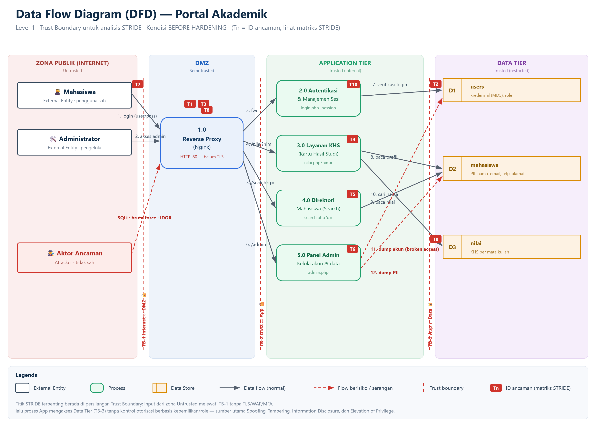

Sistem: Portal Akademik — Universitas Nusantara

users), (2) data pribadi mahasiswa/PII (mahasiswa), (3) nilai akademik (nilai), (4) integritas sesi & otorisasi.| Tipe | ID | Elemen | Trust Zone |
|---|---|---|---|
| External Entity | EE1 | Mahasiswa | Internet (untrusted) |
| External Entity | EE2 | Administrator | Internet (untrusted) |
| External Entity | EE3 | Aktor Ancaman | Internet (untrusted) |
| Process | P1 | Reverse Proxy (Nginx) | DMZ |
| Process | P2 | Autentikasi & Manajemen Sesi (login.php) | App Tier |
| Process | P3 | Layanan KHS (nilai.php) | App Tier |
| Process | P4 | Direktori Mahasiswa (search.php) | App Tier |
| Process | P5 | Panel Admin (admin.php) | App Tier |
| Data Store | D1 | users (kredensial, role) | Data Tier |
| Data Store | D2 | mahasiswa (PII) | Data Tier |
| Data Store | D3 | nilai (KHS) | Data Tier |
Tanda ✔ = kategori ancaman relevan. (S=Spoofing, T=Tampering, R=Repudiation, I=Information Disclosure, D=Denial of Service, E=Elevation of Privilege)
| Elemen | S | T | R | I | D | E |
|---|---|---|---|---|---|---|
| EE1 Mahasiswa | ✔ | ✔ | ||||
| EE2 Administrator | ✔ | ✔ | ||||
| P1 Reverse Proxy | ✔ | ✔ | ✔ | ✔ | ||
| P2 Autentikasi/Sesi | ✔ | ✔ | ✔ | ✔ | ✔ | ✔ |
| P3 Layanan KHS | ✔ | ✔ | ✔ | |||
| P4 Direktori/Search | ✔ | ✔ | ✔ | |||
| P5 Panel Admin | ✔ | ✔ | ✔ | ✔ | ||
| D1 users | ✔ | ✔ | ||||
| D2 mahasiswa | ✔ | ✔ | ||||
| D3 nilai | ✔ | ✔ | ||||
| Data flow (TB-1/TB-3) | ✔ | ✔ | ✔ | ✔ |
Risiko = Likelihood × Impact (skala kualitatif Rendah/Sedang/Tinggi).
| Likelihood \ Impact | Rendah | Sedang | Tinggi |
|---|---|---|---|
| Tinggi | Sedang | Tinggi | Kritis |
| Sedang | Rendah | Sedang | Tinggi |
| Rendah | Rendah | Rendah | Sedang |
Kolom Celah merujuk nomor pada VULN.md. Singkatan: L=Likelihood, I=Impact; R=Rendah, S=Sedang, T=Tinggi. Terpenuhi 10 titik ancaman (syarat minimal 5).
| ID | Kategori STRIDE | Lokasi (DFD) | Ancaman / Skenario Serangan | L | I | Risiko | Dampak Bisnis | Celah | Mitigasi (Hardening) |
|---|---|---|---|---|---|---|---|---|---|
| T1 | Spoofing, Tampering | Flow 1 → P2 (TB-1) | SQL Injection auth bypass pada login (admin' --, ' OR '1'='1' --) → masuk sebagai admin tanpa password |
T | T | KRITIS | Pengambilalihan akun admin; kendali penuh atas data akademik | V1 | Prepared statement (bind_param); WAF ModSecurity CRS |
| T2 | Information Disclosure | D1 users | Hash password lemah (MD5, tanpa salt) → di-crack via rainbow table/hashcat setelah bocor | T | T | KRITIS | Kredensial seluruh pengguna terekspos; pelanggaran privasi | V2 | password_hash() Argon2id; migrasi hash; enkripsi at-rest |
| T3 | Spoofing, DoS | Flow 1 → P2 (TB-1) | Brute force / credential stuffing — tanpa rate-limit, lockout, atau MFA | T | S | TINGGI | Akun lemah jebol; layanan login terbebani | V3 | Fail2ban + lockout; IAM Authelia/Keycloak + MFA (TOTP) di reverse proxy |
| T4 | Elevation of Privilege, Info Disclosure | Flow 4 → P3 (TB-2/3) | IDOR — mahasiswa mengganti nilai.php?nim= untuk melihat KHS mahasiswa lain |
T | S | TINGGI | Kebocoran nilai antar mahasiswa; pelanggaran kerahasiaan | V4 | Abaikan ?nim untuk non-admin; pakai $_SESSION['nim']; cek kepemilikan (ABAC) |
| T5 | Information Disclosure, Tampering | Flow 5 → P4 → D1/D2 (TB-3) | SQL Injection (UNION) pada pencarian → dump tabel users/PII |
T | T | KRITIS | Kebocoran massal kredensial & PII; potensi sanksi hukum | V5 | Prepared statement; WAF; akun DB privilege minimal |
| T6 | Elevation of Privilege | Flow 6 → P5 (TB-2) | Broken Access Control — /admin.php bisa dibuka mahasiswa biasa (tidak ada cek role) |
T | T | KRITIS | Akses panel admin oleh non-admin; kebocoran seluruh akun & PII | V6 | RBAC: verifikasi role==='admin', jika tidak 403; default-deny |
| T7 | Info Disclosure, Tampering | Flow 1/2 (TB-1) | Trafik HTTP tanpa TLS → sniffing kredensial & sesi (Wireshark/MITM) | S | T | TINGGI | Penyadapan kredensial di jaringan; session hijack | V7 | TLS/HTTPS (redirect 80→443); HSTS |
| T8 | Information Disclosure | P1, P2, P4 | Kebocoran pesan error & banner (error SQL/PHP, versi server) memudahkan penyusunan serangan | S | S | SEDANG | Reconnaissance dipermudah; mempercepat eksploitasi | V8 | display_errors=Off; pesan generik; server_tokens off |
| T9 | Tampering, EoP | D1–D3 / TB-3 | Attack surface berlebih & kredensial DB lemah — port 3306 terekspos, password root123/portal123 |
S | T | TINGGI | Akses langsung ke database; manipulasi/penghapusan data | V9 | Tutup port DB; secrets kuat; segmentasi jaringan; least privilege |
| T10 | Spoofing (session hijack) | P2 (sesi) | Manajemen sesi lemah — cookie tanpa Secure/HttpOnly/SameSite, tanpa regenerasi id saat login |
S | S | SEDANG | Pembajakan sesi; peniruan identitas pengguna | V10 | Set cookie flags; session_regenerate_id(true) saat login; timeout sesi |
Ringkasan sebaran risiko: KRITIS = 4 (T1, T2, T5, T6) · TINGGI = 4 (T3, T4, T7, T9) · SEDANG = 2 (T8, T10).
/admin tanpa cek role). Rekomendasi: forward-auth (Authelia/Keycloak) sebagai Policy Enforcement Point.| Prinsip Zero Trust | Kondisi Saat Ini (Before) | Target (After Hardening) |
|---|---|---|
| Verifikasi eksplisit setiap akses | Login lemah, tanpa MFA | IAM + MFA di setiap request (PEP di reverse proxy) |
| Least privilege | Akun DB root/all-privileges; role tidak ditegakkan | Akun DB minimal; RBAC/ABAC per-objek |
| Asumsi breach / mikro-segmentasi | Semua service satu jaringan, port DB terbuka | Segmentasi tier; DB tidak terekspos; TLS internal |
| Enkripsi menyeluruh | HTTP polos, MD5 | TLS in-transit; Argon2id + enkripsi at-rest |
| Monitoring & logging | Error bocor, tanpa deteksi | Logging terpusat; Fail2ban/WAF alerting |